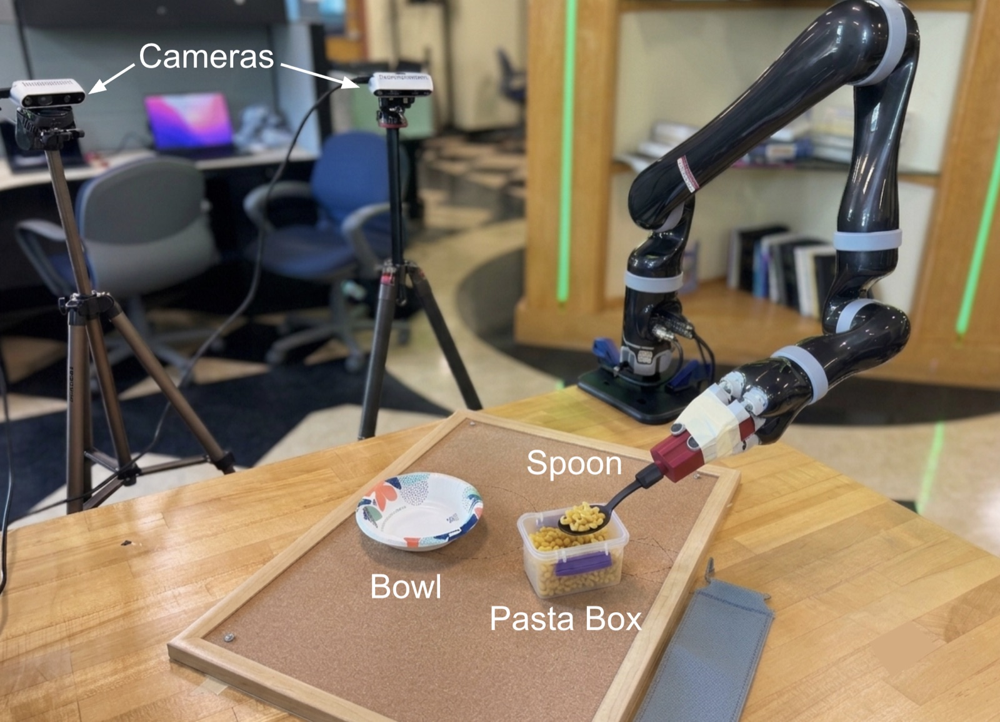
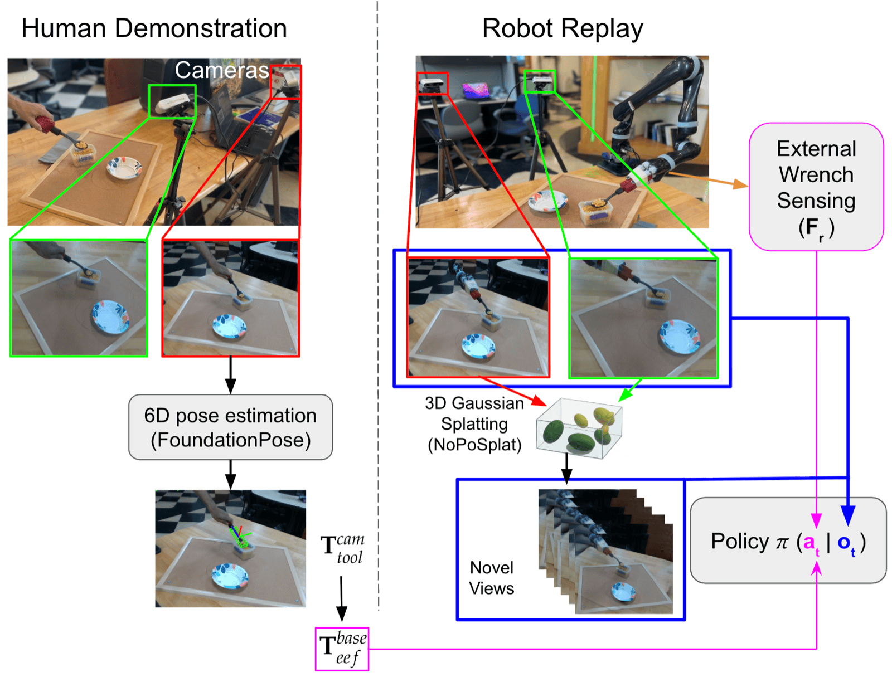

Force-conditioned imitation learningfrom vision-only human demonstrations via robot replay

Demo
Narrated walkthrough of the full pipeline. Video from the project page.
How it works
Most imitation learning copies where the robot's hand should go, but tasks like scooping also depend on how hard to push. Too little force and the spoon comes up empty; too much and it can spill food or, in assistive feeding, be unsafe for the person being fed. Getting that force usually takes a force sensor on the robot's wrist or a sensor on the person doing the demonstration.
Here, a person does the task with an ordinary spoon in front of a camera, and FoundationPose tracks the spoon's 6D pose. The robot then replays that path under position control. Its joints have built-in torque sensors, so subtracting what its own dynamics model predicts leaves the force from contact. That gives a force label for every moment of the demonstration without adding any sensors.

A diffusion policy is trained on camera images from the replays to predict both a reference pose and a reference force. At run time, the predicted force goes to an admittance controller as a setpoint that changes over the course of the task.
My part
The policy runs on a single camera, so it has to cope with a camera that isn't exactly where it was during training. I added novel-view synthesis: from the two fixed cameras' images of each replay, NoPoSplat, a feed-forward 3D Gaussian Splatting model, renders the scene from new viewpoints placed between the two real cameras. Actions are defined in the robot's frame, so each render reuses the real frame's labels and the extra views cost no extra data collection.
I compared MASt3R with Gaussian Splatting, Splatt3R, and Splatt3R with gsplat before choosing NoPoSplat, which gave the cleanest renders. Cropping its output to the largest area without holes removed the remaining edge artifacts.
I also calibrated and hardware-synchronized the event and RGB-D cameras, automated the data collection pipeline (from about 8 hours of processing per task to about 30 minutes), trained a U-Net on about 500 hand-labeled images to mask out the robot arm, and built a Gaussian Splatting simulation for testing policies before running them on the robot.
Results
Each setup was tested over 40 trials on a pasta scooping task. A trial counts if the robot scoops pasta and moves it into the bowl without spilling. Every policy was trained on 30 demonstrations, about five minutes in total.
| Data | Force | Policy | Success |
|---|---|---|---|
| Joystick teleoperation | Yes | Diffusion | 0% |
| Tool-as-Interface baseline | No | Diffusion | 80% |
| Human demo and replay | No | Diffusion | 82.5% |
| Human demo and replay | Yes | ACT | 92.5% |
| Human demo and replay | Yes | Flow matching | 92.5% |
| Human demo and replay (ours) | Yes | Diffusion | 97.5% |
Force also changed how the robot pressed. Without it, the policy under-committed to contact. With it, the average force came out closer to what the demonstrations used, and both stayed well under the demonstrations' highest peak.
| Contact force | Demos | Without force | With force |
|---|---|---|---|
| Mean | 4.19 N | 3.68 N | 4.06 N |
| Average peak | 9.32 N | 6.57 N | 7.19 N |
| Highest peak | 14.91 N | 8.11 N | 7.69 N |